【夜·城市高楼天台】
2024年，深秋的夜风像刀子一样割在脸上。
我站在四十八层的天台边缘，身后是我一手创办的公司——曾经市值三十亿的"江盛科技"。
（三年前，这栋楼的命名权都是我的。）
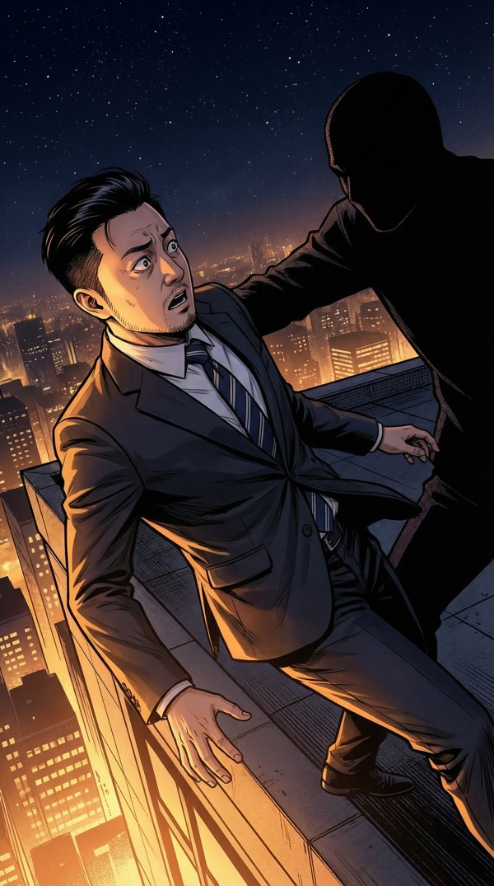
【夜·城市高楼天台】
2024年，深秋的夜风像刀子一样割在脸上。
我站在四十八层的天台边缘，身后是我一手创办的公司——曾经市值三十亿的"江盛科技"。
（三年前，这栋楼的命名权都是我的。）
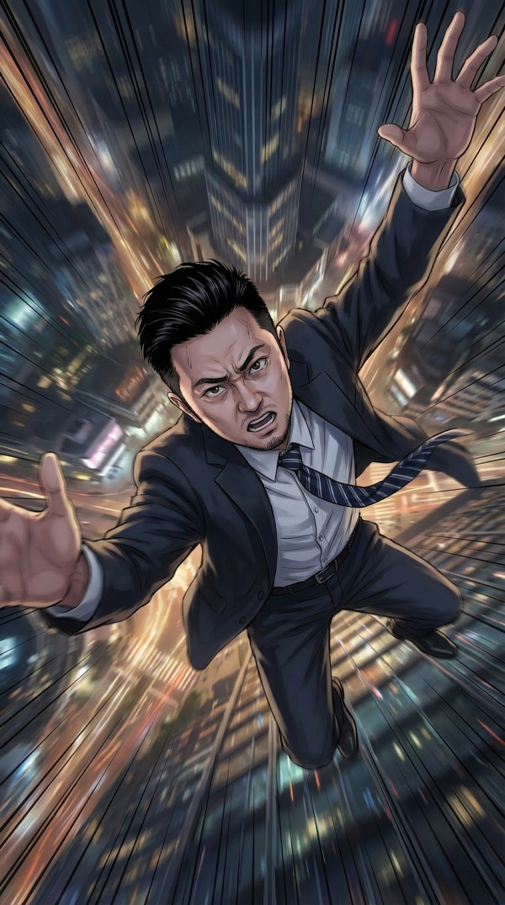
一双手从背后猛推过来。
我的身体向后仰去，城市的灯火在眼底翻转。风灌满了西装，像是要把我整个人吹散。
（是陈耀明。我最信任的合伙人。那个和我一起从出租屋里写代码的兄弟。）
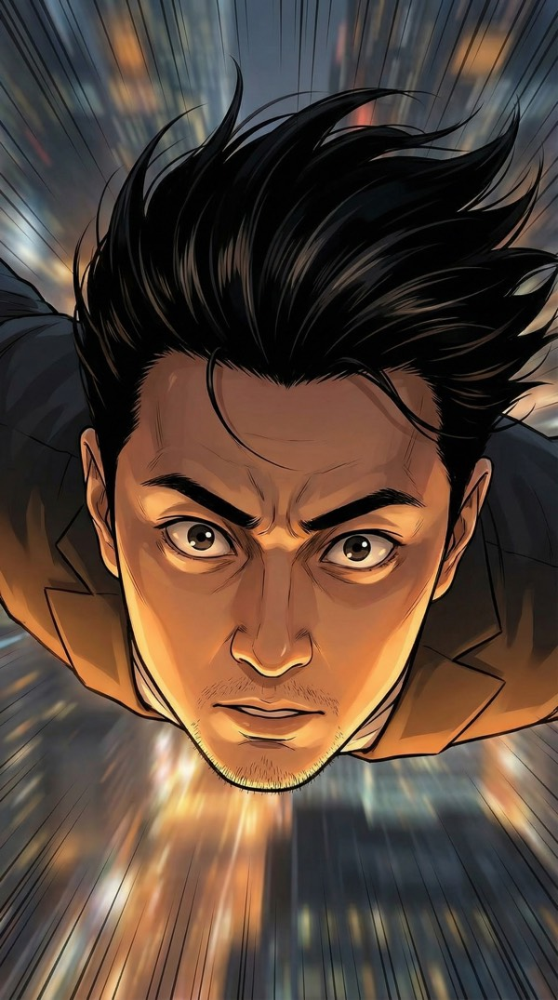
坠落的那几秒，我的脑子异常清醒。
（我这辈子犯的最大错误，就是以为光靠技术和真诚就能守住一切。）
（我忘了——这世上有些人，笑着递刀。）
眼前的霓虹灯越来越近，越来越亮——
然后，一切归于黑暗。
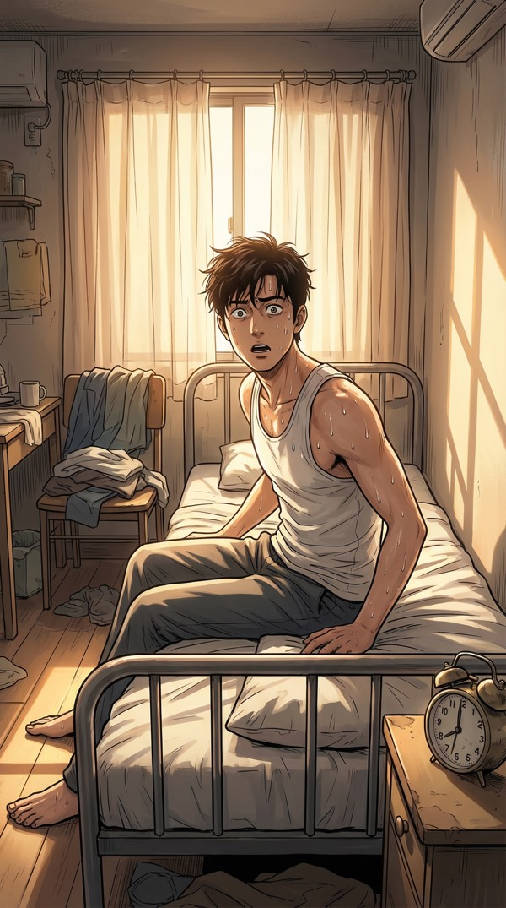
【晨·廉租房卧室】
"啊——！"
我猛地从床上弹起来，浑身冷汗湿透了背心。
心脏像是要从嗓子眼跳出来。手在抖，整个人在抖。
（我……我不是死了吗？）
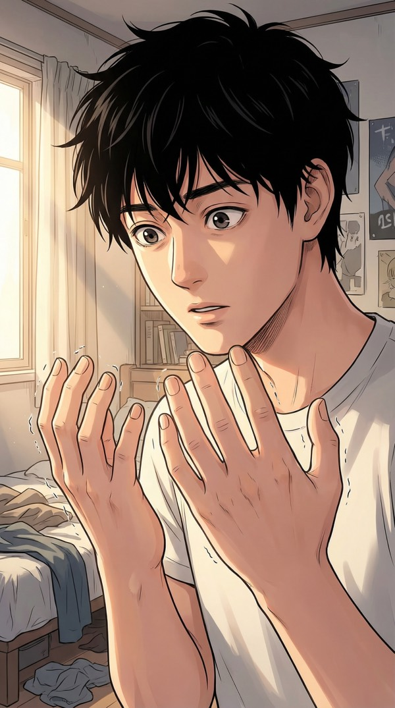
我举起自己的手——
白净、没有老茧、没有那道三年前手术留下的疤。
这不是我三十五岁的手。这是……二十五岁的。
（等等。等一下。冷静。深呼吸。）
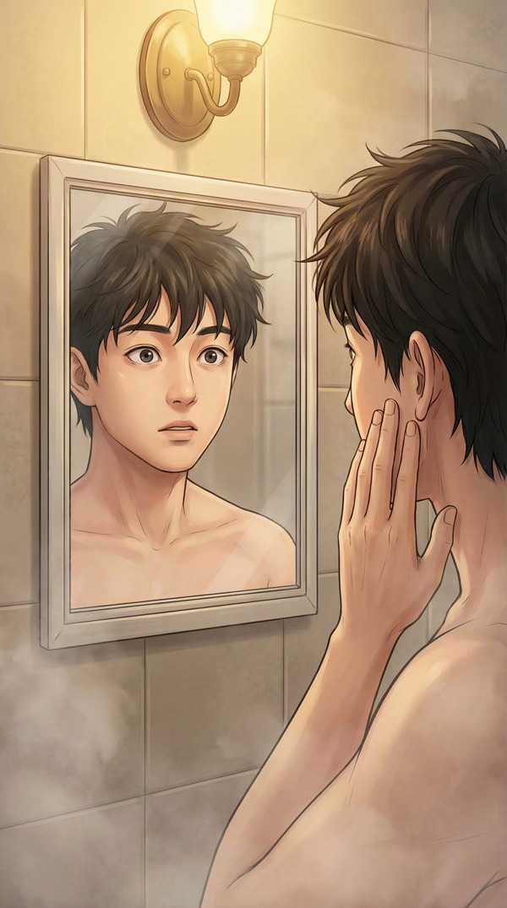
冲进狭小的卫生间，镜子里映出一张年轻的脸。
没有胡茬，没有眼角的细纹，脸颊还带着年轻人的棱角。
（这是十年前的我。那个刚退伍的我。那个……还什么都没有的我。）
双腿一软，靠着洗手台滑坐在地上。
桌上那台翻盖手机亮了一下。
2014年3月15日。
十年。我回到了十年前。
（如果这是真的……如果我真的回来了……）
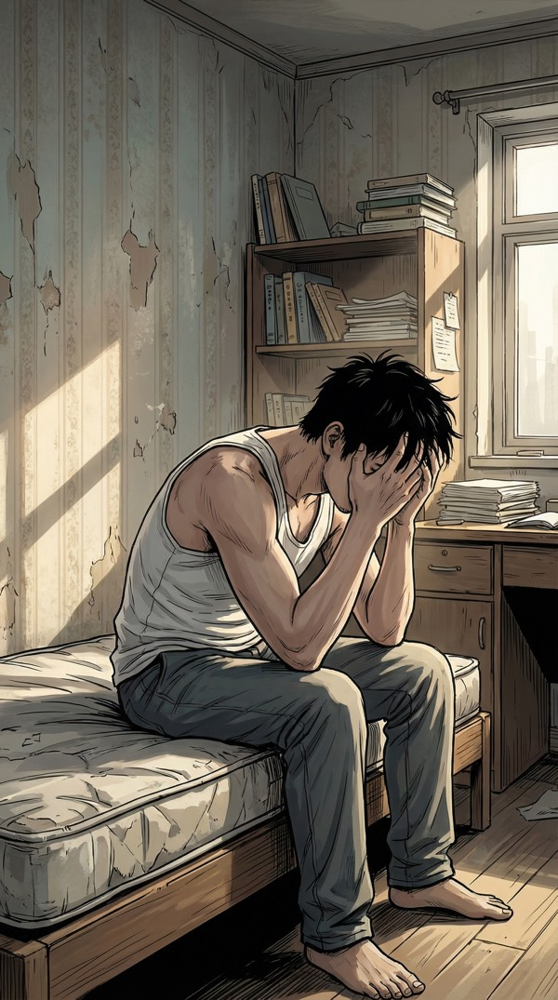
我坐在床边，头埋在手心里。
脑子里翻涌的不是恐惧，是十年的记忆。每一个错误的决定、每一次错失的机会、每一个信错的人。
（上辈子我是代码天才，技术无敌，但商场上蠢得像头猪。）
（这辈子不会了。绝不会了。）
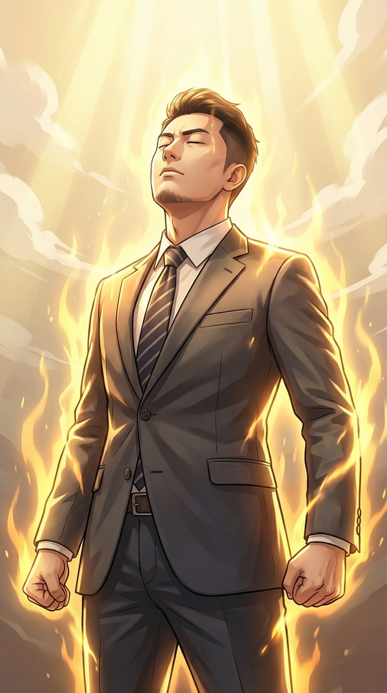
我站起来，仰头闭眼。阳光穿过破旧的窗帘落在脸上，暖得有些不真实。
拳头在身侧攥紧。
（这一世，我不光要赢回来——我要赢十倍。）
（而且这一次，我手里还有一张底牌……上辈子谁都不知道的底牌。）
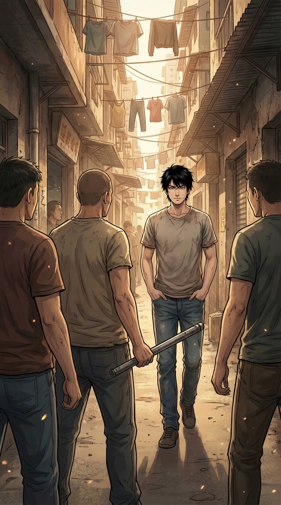
【午·城中村小巷】
出门买午饭的路上，窄巷子里三个光头堵住了去路。
"哟，这不是朱哥嘛？听说你退伍回来了？上个月房租还欠着呢。"
领头的捏着根铁管，嘴角叼着烟，一脸"老子是这片的"。
（呵。我倒是忘了，2014年我刚退伍那会儿，穷得叮当响，连这种小角色都敢欺负我。）
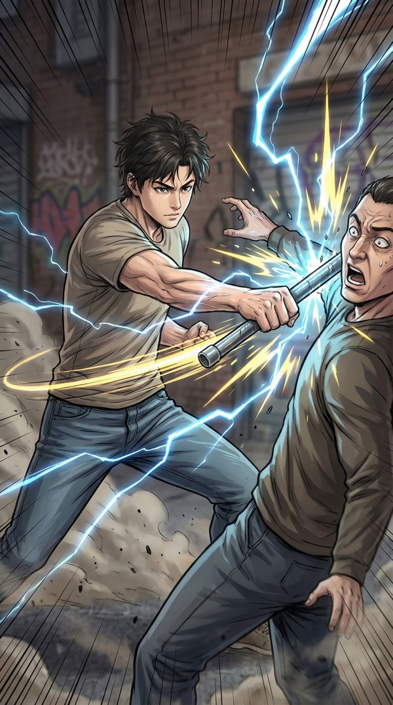
铁管带着风声劈下来——
我侧身让过，右手顺势一搭，夺管卸力，一气呵成。动作干净得像教科书。
铁管已经在我手里了。整个过程不到半秒。
（嗯……特种兵的肌肉记忆还在。很好。非常好。）
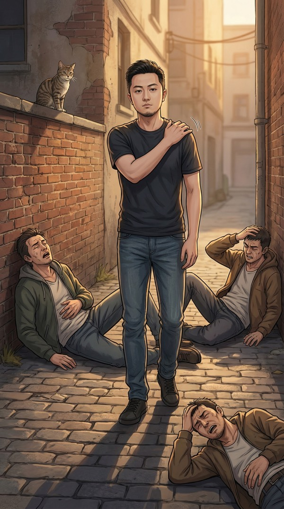
三秒后，三个人都在地上躺着了。
我把铁管靠在墙边，拍了拍T恤上的灰。
（上辈子我退伍后就彻底封存了这些本事，一心搞技术创业。觉得靠拳头没出息。）
（结果被人从楼上推了下去。多讽刺。）
巷子口一只橘猫蹲在墙头上，歪着头看我。
我冲它笑了笑："别怕，叔叔是好人。"
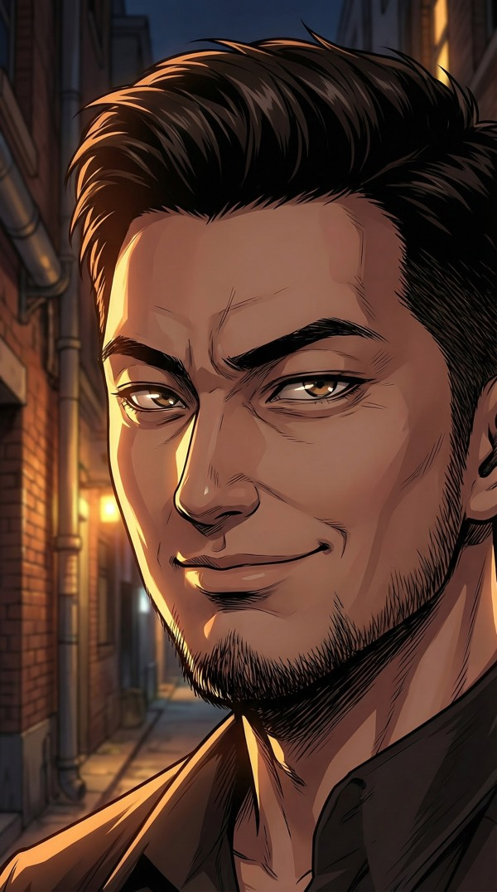
继续往前走，嘴角带着一丝意味不明的笑。
（这辈子，技术是右手，武力是左手。缺一不可。）
（但最重要的，是这颗见过十年风浪的脑子。）
十年的未来记忆在脑子里翻滚。我可以直接去找陈耀明——那个未来推我下楼的"好兄弟"，此刻还在某个出租屋里写代码。也可以先不管他，抓住眼前最大的时代红利。
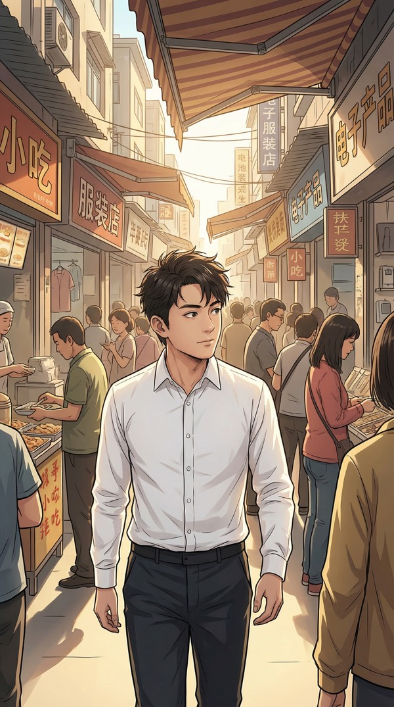
【午·商业街】
我走在2014年的商业街上，目光扫过每一家店铺。
智能手机还没普及到这种程度，移动支付刚冒头，短视频平台还在胎儿期。
（天哪。这简直是站在金矿入口，而整条街没有一个人带铲子。）
（上辈子我2016年才入场，已经算早了。现在是2014年——我比所有人都早两年。）
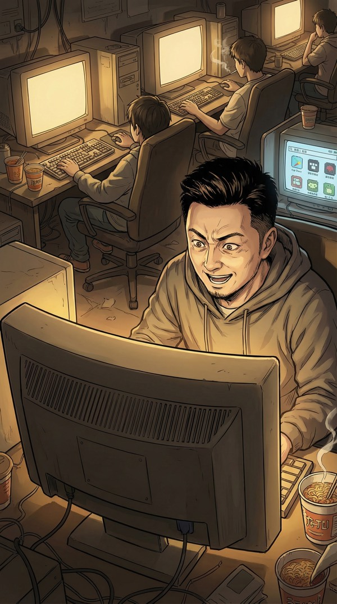
【午·网吧】
找了家网吧，花两块钱坐下来。
屏幕上是原始版本的应用商店，APP稀少得可怜。
（三年后会出现的爆款APP，我闭着眼都能列出二十个。它们的商业模式、增长曲线、关键转折点……我全知道。）
（但我不打算复制别人——我要做的，是那些被错过的更大的机会。）
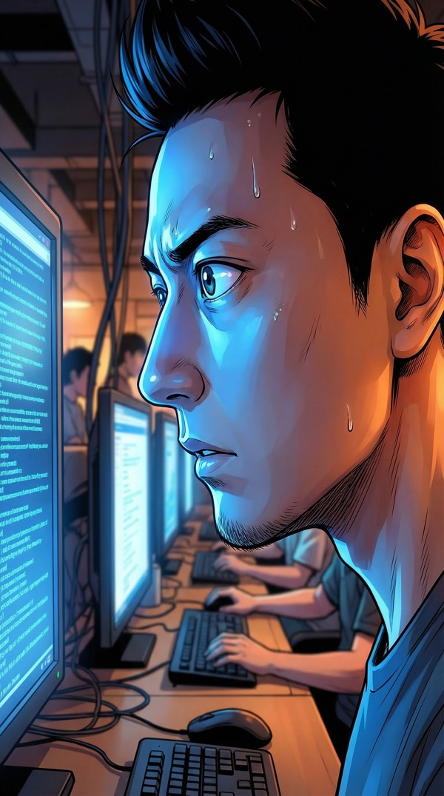
盯着屏幕发光的时候，我感觉十年的记忆像数据库一样在脑子里检索、排列、组合。
（上辈子我做的是企业级SaaS，太慢了。这辈子我要做的是——消费互联网。快。猛。爆。）
（第一步：本地生活服务。2014年这个赛道空得像操场，但两年后会变成血海。）
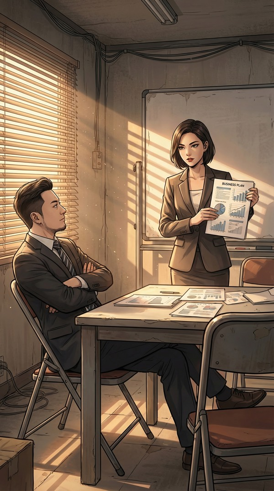
【午后·创业孵化器小会议室】
下午，我在本地创业孵化器约了一个人——林知秋。
上辈子，她是国内排名前五的天使投资人。此刻她刚从美国回来，在孵化器兼职当导师。
她推了推眼镜，把一份商业计划书滑到桌对面。
"你好，我看了你的项目申请。说实话……写得很粗糙。但有几个数据判断让我很意外。"
我听着她分析，嘴角微微上扬。
（她说我的用户增长预测"太激进"——呵，因为我知道真实数据。三年后的真实数据。）
（林知秋，未来的顶级投资人。此刻你还不知道自己有多厉害——也不知道我有多需要你。）
林知秋对我的商业计划有疑虑，但明显感兴趣。我可以用未来的精准预测震住她立刻拿投资，但那会暴露我知道太多。
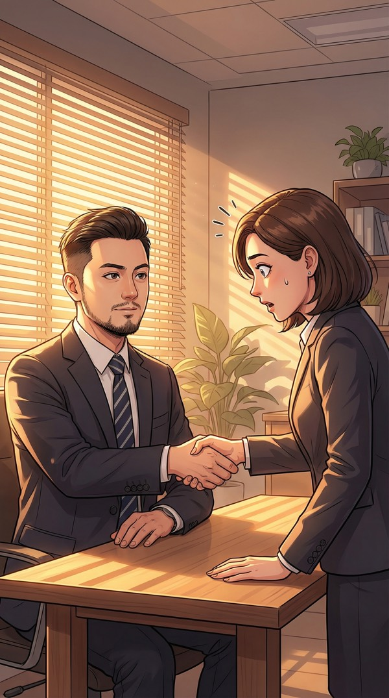
我站起来，主动伸出手。
"林导师，这次先谢过。计划书我回去改一版，数据做保守一点。一周后再来？"
她愣了一下——大概是不习惯一个毛头小子这么沉稳。
但还是握了手。她的手很有力。
"好。一周后见。"
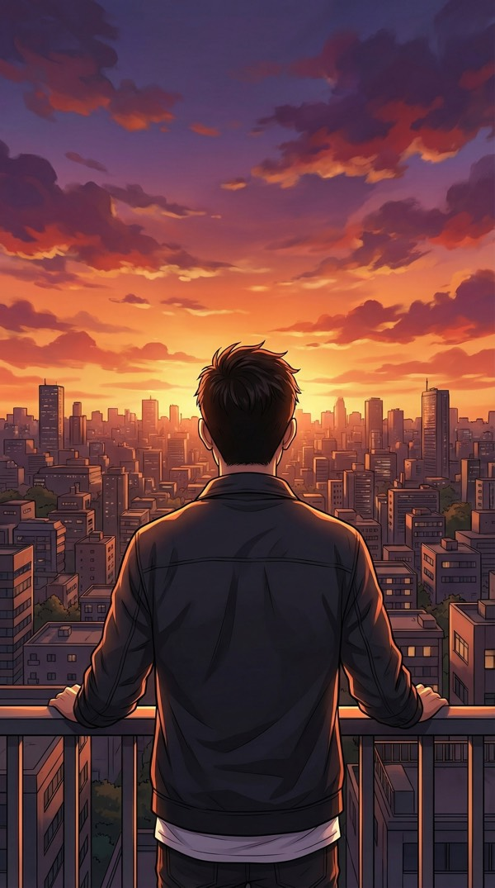
【傍晚·天台】
黄昏的时候，我站在孵化器楼顶，俯瞰这座还在发展中的城市。
天际线比十年后矮一大截。那些未来的地标建筑，此刻都还是工地。
（这座城市会在五年内翻一倍。而我要成为推它翻倍的人之一。）
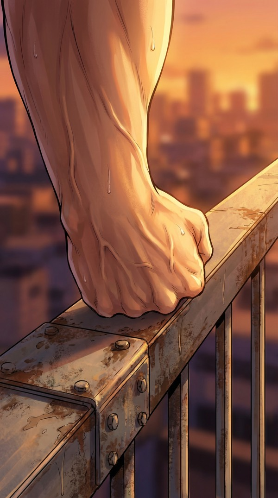
右手攥紧了栏杆。指节发白。
（上一世我站在四十八楼往下掉的时候，心里想的是——如果再来一次……）
（现在真的再来了一次。我发誓。）
（不会再有人能推得动我。谁都不行。）
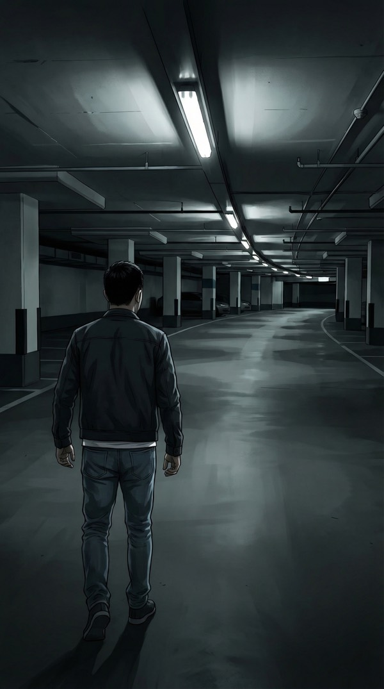
【夜·地下停车场】
见完林知秋出来已经天黑了。抄近路穿过商场地下停车场。
荧光灯嗡嗡作响。影子被拉得又长又扭曲。
（有人跟着我。至少三个。走位间距说明受过训练。）
我没加速，反而放慢了脚步。双手插兜，肩膀微微前倾——这是特种兵备战的放松姿态。
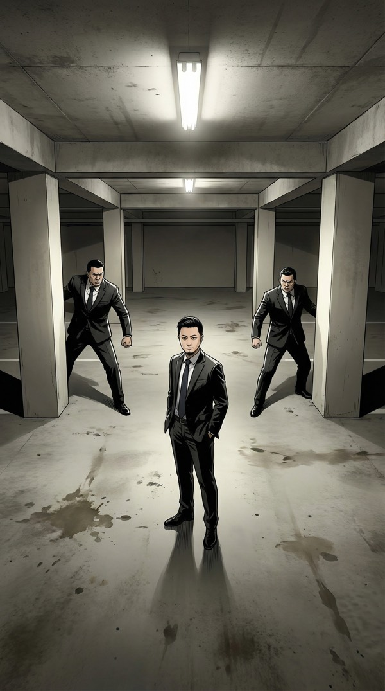
三个黑西装从水泥柱后面走出来，三角包围阵型。
不是街头混混。动作太规矩了。
（有意思。2014年我还是个无名小卒，谁会派职业打手来找我？）
（除非……他们找的不是"现在的我"。）
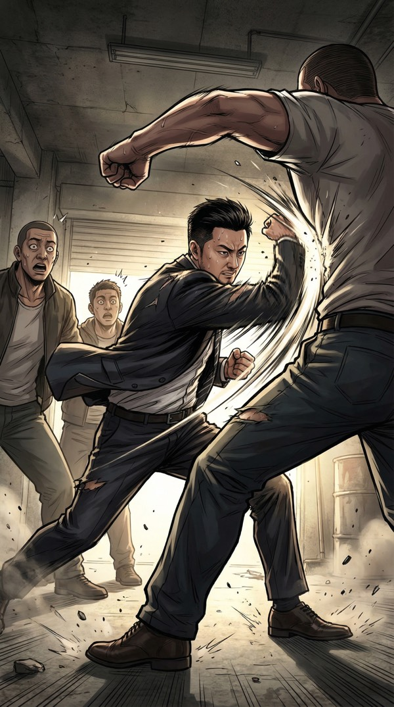
第一拳到了——
我矮身闪过，反手一肘直捣对方肋下。骨头传来的震动告诉我：三根肋骨，至少裂了两根。
（手感不错。这具二十五岁的身体比我想象中快。特种兵体能的巅峰期就是这个年纪。）
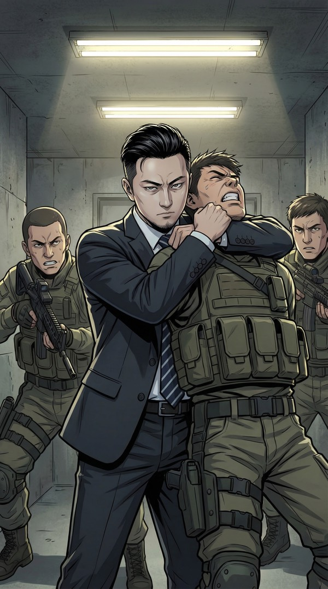
一号被我反锁在臂弯里当盾牌，二号和三号不敢轻举妄动。
"说。谁派你们来的。"
声音不大，但回荡在空旷的停车场里，带着军人特有的压迫感。
二号的眼神闪了一下——是那种"任务目标比情报描述强得多"的惊惧。
三个职业打手。不像仇杀，更像试探。打完再审问还是放一个回去报信？
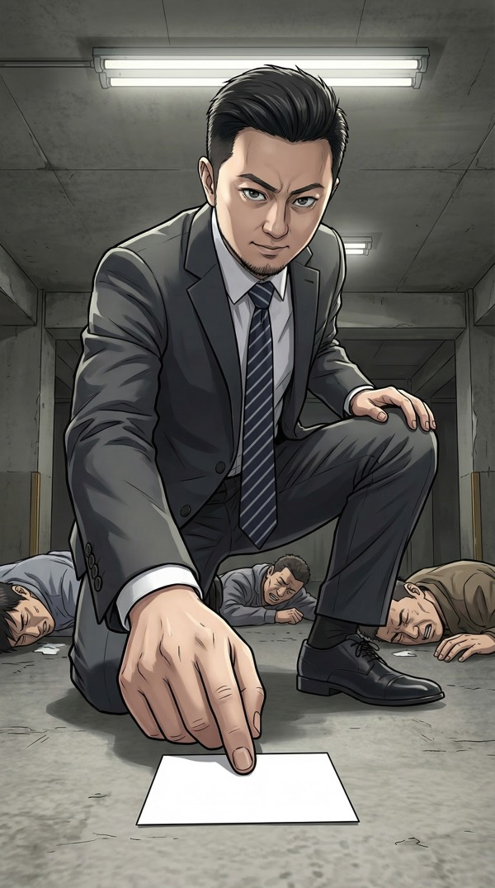
我从地上捡起一张掉落的名片，翻过来看。
上面印着一个抽象的几何图案logo——我认识这个标志。
太认识了。
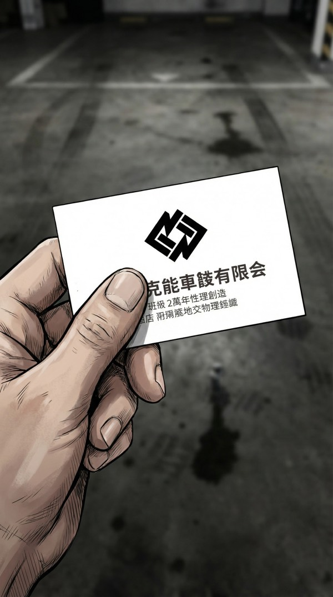
名片上的公司名让我瞳孔收缩。
（……耀盛集团。）
（陈耀明的公司。准确说，是他五年后才会创办的公司——用从我手里偷走的技术和资金。）
（但2014年……这家公司不应该存在。）
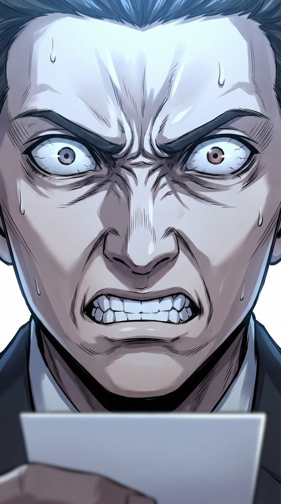
一股冰冷的怒意从胸腔爬上来，但我用力压了回去。
（冷静。冷静想。两种可能：第一，这家公司2014年就有了，只是上辈子我不知道；第二……）
（我不是唯一重生的人。）
这个念头像闪电一样击中了我。
【记忆闪回·轻微褪色暖色调】
上辈子的画面涌上来——
陈耀明和我在创业初期的庆功宴上碰杯。那时他笑得那么真诚，称呼我"江哥"。
（我们从同一间出租屋起步，一起吃了三年泡面，一起拿到了第一轮融资。）
（我把公司当家，把他当兄弟。）
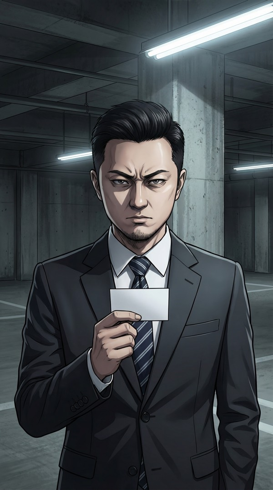
画面回到现实。
手里捏着那张名片，纸在指间微微弯曲。
（不管哪种可能，结论是一样的——陈耀明比我想象的更危险。远不止"贪心的合伙人"那么简单。）
（这盘棋，比我想的大得多。）
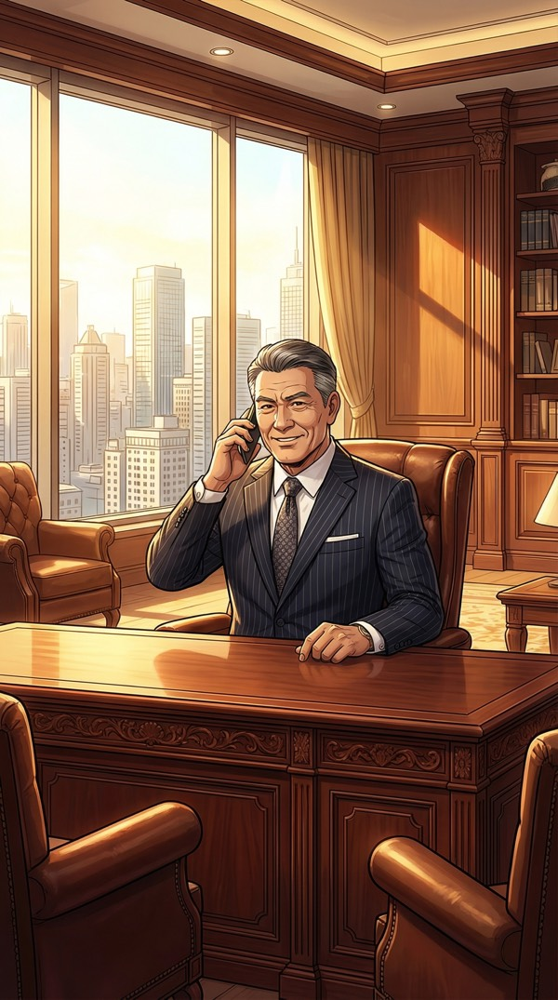
【夜·奢华办公室（未知地点）】
同一时刻，城市另一端——
一间与2014年格格不入的豪华办公室里。落地窗外是城市夜景。
一个五十来岁、两鬓微灰的男人坐在巨大的红木桌后面，正在通电话。
他笑得很自信。像是一切尽在掌控。
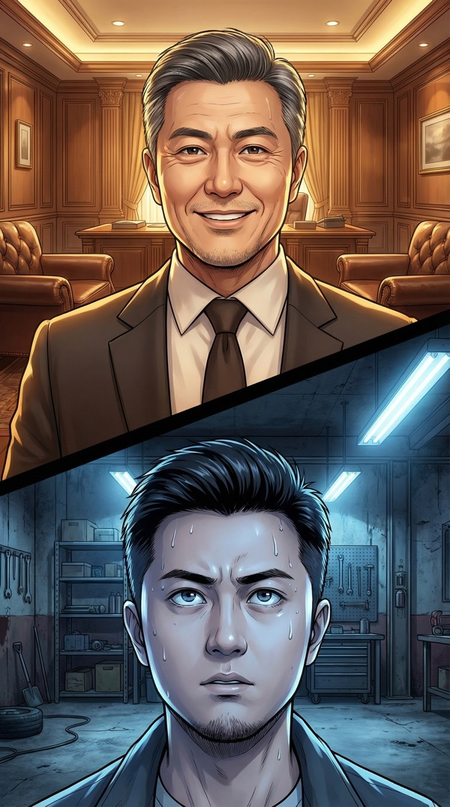
画面一分为二——
上面：那个神秘男人在豪华办公室里微笑。
下面：我在昏暗的停车场里抬头，眼神冷厉如刀。
（你盯着我，我也盯着你。）
（只不过这一次，猎人和猎物的身份……该换一换了。）
我现在要同时应对两条线：创业抢占先机 + 调查陈耀明/耀盛集团的背景。精力有限。
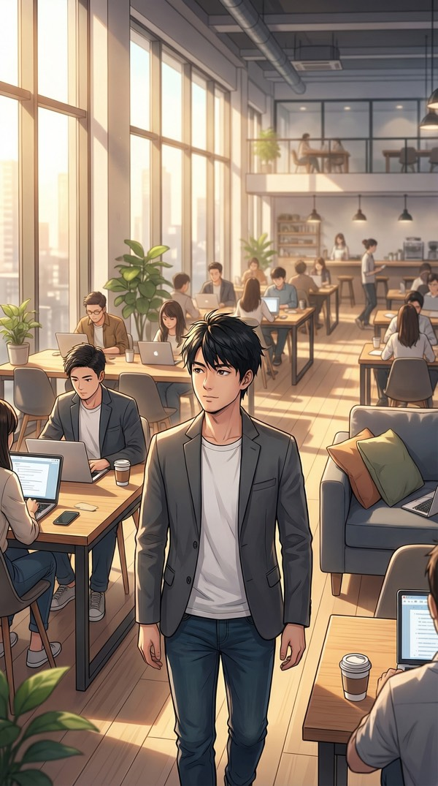
【次日上午·联合办公空间】
第二天一早，我出现在本地最大的联合办公空间。
穿了件整洁的休闲西装外套，配深色牛仔裤——刻意打扮得比实际年龄成熟。
环顾四周。到处是怀揣梦想的年轻面孔。
（2014年的创业圈，天真得让人心疼。这些人里九成会在三年内失败。）
（但那一成成功的——将会改变世界。）
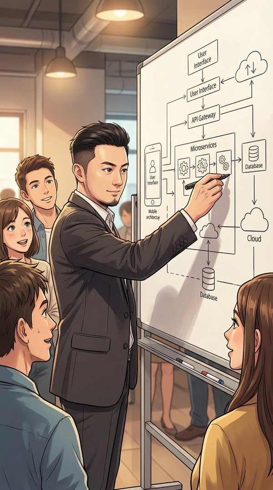
我在一块白板前停下，随手画了一个本地生活服务的架构图。
手在白板上飞速移动，商业逻辑、技术架构、用户增长模型——信手拈来。
周围开始聚人了。一个、两个、五个……
（上辈子我花了三年才想明白的东西，现在我用十五分钟就画清楚了。这就是重生者的作弊器。）
我讲得很投入。不是在表演——是真的享受。十年前的那些关键决策点，此刻像是重新走一遍游戏的已通关关卡，每一步都清晰无比。
看着围观的人眼睛越来越亮，我知道——团队雏形，就在这群人里。
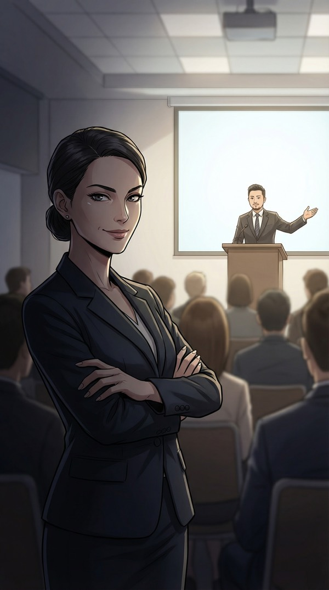
人群后排，一个身影引起了我的注意——
林知秋。她不知道什么时候来的，抱臂站在最后面，嘴角带着微妙的笑意。
（好。你来了就好。）
（昨天的"粗糙计划书"是饵。今天这场即兴演讲，才是真正的面试——但面试的人，是我在面试你。）
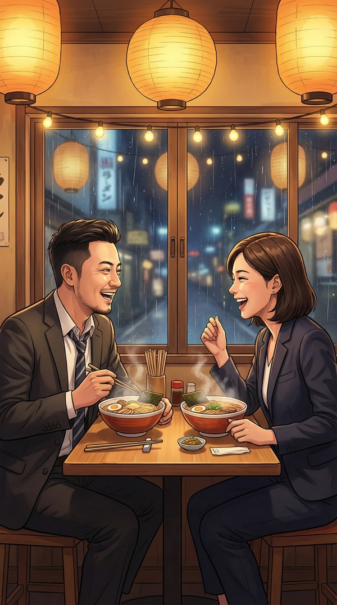
【夜·拉面馆】
晚上九点。我和林知秋在街角一家热气腾腾的拉面馆里坐下。
两碗拉面，一壶热茶。
她开口了。
"朱江，你让我很意外。昨天那份计划书像学生作业，今天你画的那个架构图——至少值三年经验。"
我笑了笑："也许我吃亏吃得比较快。"
林知秋主动提出投资意向。她可以投50万启动资金，占股15%。这个条件在2014年算非常大方。
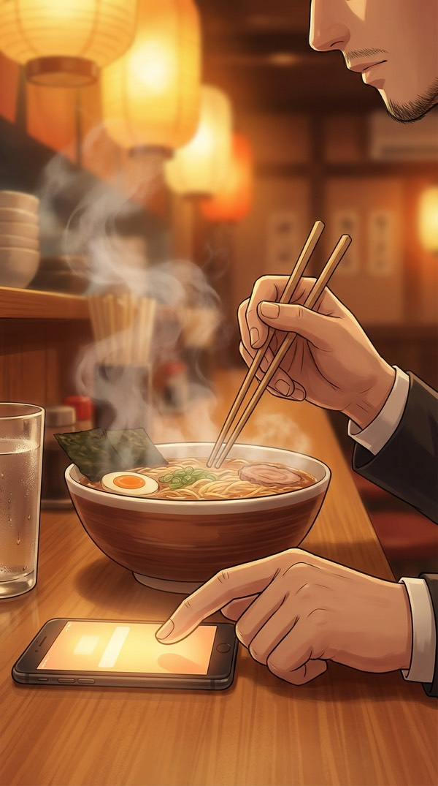
林知秋听完我的条件，筷子停在半空。
沉默了大概十秒。
"你……在跟一个刚认识两天的人说这种话。"
"我信人很准。"
（因为我见过你十年后的样子。你值得我押上所有筹码。）
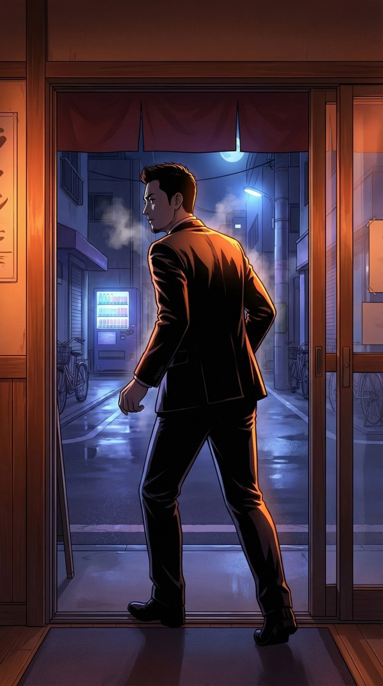
走出拉面馆，街灯拉长我的影子。
突然，后脖颈传来一阵熟悉的警觉——
有人在监视。
身体微微绷紧，但脚步没变。
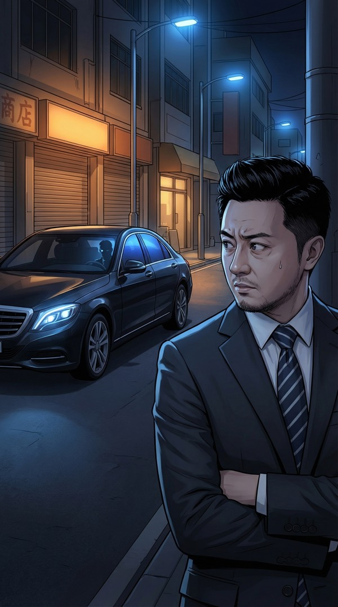
街对面，一辆黑色轿车静静停在暗处。车窗是那种看不透的深色贴膜。
我用余光锁定它——引擎没熄，车牌是外地的。
（又来了。和昨晚停车场那伙人是一路的吗？）
（不。这辆车的档次更高。这是另一批人。）
车窗里面，一只戴着手套的手正举着手机，屏幕上是我的监控照片。
（拍照角度是今天白天在联合办公空间的。他们一直在跟踪我。）
（有趣。我重生第二天，就已经有两拨势力盯上我了。）
（这不正常。非常不正常。除非——）
我背对黑色轿车，面朝城市的夜。
风吹过发梢。这座城市灯火通明，暗流涌动。
（除非有人知道我会回来。）
（除非……这场重生，从一开始就不是意外。）